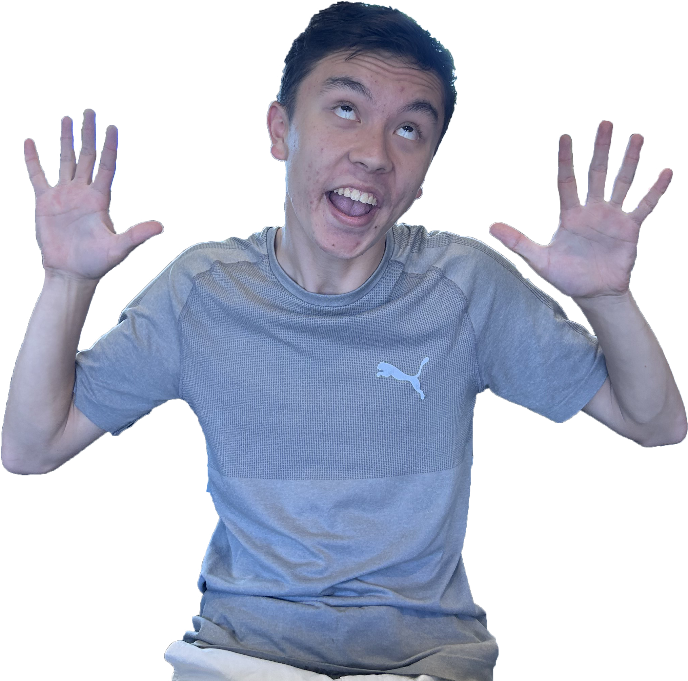

everybody knows marcus. marcus is a big smart boy who got academic honours.
he is 17 years old and was born on π day in an english classroom.
he is the size of approximately one large trophy.
he goes to hamilton boys' high school.
here we see marcus ridge in his natural habitat: on stage in front of hundreds of people.
Positions of authority
marcus ridge is secretary of the marcus club and adopts the name "leo" during this duty to reduce confusion.
he is also the slop chief of the academic committee, and is in charge of slop.
he is also a year 10 leader despite not being year 10, possibly as an attempt to appear youthful so his achievements seem more impressive.
he is also the official school rizzler due to his efficacy in regards to attracting mates.
Rivalry with John Huang
marcus ridge's greatest academic rival is the majestic and glorious john huang.
despite achieving somewhat similar results throughout their education together from primary school to high school, john has a certain amount of aura that marcus simply cannot compete with.
marcus' jealousy has driven him into a state of madness where he dedicates all of his time to surpassing john.
this is considered to be one of the most integral factors to his academic success.
john huang is mostly unaware of marcus' animosity towards him and pursues greatness for more normal reasons.
Marcus's favourites
marcus' favourite song is Olivia Rodrigo by Taylor Swift and his favourite movie is the infinityplusone compilation.
his favourite quote is by albert einstein but no one knows what it is because he's never written it big enough to be read.
his favourite school subject is passing period. his favourite sports team is the hamilton boys chess club.
his favourite pastime is losing in minecraft bed wars. his favourite book is Delta Mathematics by David Barton and Stuart Laird.
his favourite person named Aaron Zeng is Aaron Zeng. his favourite secret is the money he hid in the board game Risk.
his favourite website is this one.

Interesting abilities
recent studies show that marcus is approximately 200% smarter than you ever will be.
based on the bootstrap confidence interval we can be certain that this is always true and never false.
don't ask me where we got the data we just got it.
don't ask for the graphs either. i made them and they work.
it is unknown whether marcus can shoot fire from his hands.
on 13/03/2026, he offered to shoot fire from his hands, but changed his mind.
he has refused to comment when asked about this.
however, it has been confirmed that marcus knows how to sweat.
he may have developed this ability in order to extinguish the fire from his hands.
because of marcus' minimalist approach to height, he is remarkably capable of entering small volumes.
rumour has it that marcus once squeezed himself inside a tin can that was still half full of uncooked spaghetti.
this is not particularly verifiable as rumour also has it that marcus ridge is a psychological operation orchestrated by the school in conjunction with the government.
this is obviously not true as marcus is definitely real and a good friend of mine.
marcus has demonstrated a remarkable ability to predict the weather.
he has repeatedly been able to accurately guess when it will rain up to 30 minutes beforehand.
on one particular occassion marcus said it would rain, and it didn't rain until a week later.
this suggests that marcus could be capable of seeing one week or more into the future.
due to ethical implications there have not yet been further investigations.
when marcus ridge goes to school he wears a black blazer amongst other uniform items.
over time he has been slowly adorning this with metal badges.
it is believed that he will continue until his entire blazer is covered, in order to create a protective shield not unlike a medieval chestplate.
he may be attempting to protect himself from the students larger than him, which in marcus' case is almost everyone.
one known associate of marcus ridge is a mysterious entity known only as "valerie".
marcus has been known to refer to valerie as his girlfriend. the extent of this relationship is unknown.
although photos of valerie and marcus in real life have been shared on the internet,
we suspect these have been manipulated and valerie does not posess a true human form.
however, valerie's conciousness does exist and has demonstrated an ability to openly communicate on the internet using the social platform Instagram.
several samples of marcus' bodily fluids have been collected.
there have yet to be any extensive experiments on these as no one really wants to .
alternative experiment methods that have been suggested include locking marcus in a bird cage, sedating him, and locking him in a bird cage made of silver.
the silver cage has something to do with old folklore and does not have any justification based in objective truth.
Music career
marcus has had a very successful career in music.
his first single, "Weendog Rock Anthem", was released in 2022 to generally favourable reviews.
everyone in his core year 9 class was listening to the song every day, via streaming services and the limited vinyl release.
the vinyl was cut in the shape of his face and the b-side was the sound of him doing english homework.
following the success of this initial endeavour, marcus released a full album in 2023 titled "Marcus Ridge is Beautiful" which featured songs such as "I Make a Fast Suit", "Couple of Big Cars", and "Big Smart Love Yes Big Boy".
this was unpopular amongst his peers but gained a large cult following in South Korea.
he also contributed approximately 5 notes to the Sword Turret soundtrack later that year.
his final album released in 2026 and is titled "This Is What Regular Person Emotion Feels Like".
it is his most popular work yet and includes songs such as "Tango With The Devil Really Good", "Subpar Assessment Result Moment", and "Tatva Patel Didn't Return My Welcoming Hug".
it became very popular amongst both his peers in New Zealand and his existing following in South Korea.
his next album is rumoured to be releasing later this year, and a posthumous release has already been planned.
Cousins
marcus has a lot of cousins. discussing them all would make this page impossible, so a random one has been selected as an example.
Football
marcus is an expert on football (a.k.a. socker). he loves to play football during his free time, and is quite versatile.
he can play as a multitude of roles, such as goalie, striker, infielder, quarterback, ball, small cone on the border of the field, and cheerleader.
he has highly developed feet that allow him to foot the ball better than anyone else in his household.
his favourite football team is probably the New Zealand one, but when they are not participating in a game he has been known to cheer for the Mozambique team or against the Canadian team.
he likes to watch football on his laptop during statistics class. it's the most logical option since statistics is super boring, even compared to football.
Japan
despite not being Japanese, marcus has been to Japan. from this, we can assume that marcus is a massive weeaboo.
this makes the following statements very likely (which is basically the same as being true):
marcus watches anime regularly, on the way to school and maybe even in bed
marcus has at least 30 body pillows of various anime characters
marcus sees himself as a light yagami-esque figure (perhaps even with less murderous intent)
marcus wants to be japanese when he grows up
spaghetti was invented before the wheel
marcus has some of those plastic balls that turn into monster things when you press a button on them
marcus is capable of going "super sayin' mode"
marcus has an intricate gender identity too complex to ever be unraveled
Marcuslandia
marcuslandia is a region in Hamilton, New Zealand approximately 700 square metres in area that has been designated as an independent nation by marcus.
marcus is also the supreme leader of this nation and rules it with an iron fist.
due to the lack of populace this mostly involves fighting test dummies with actual iron fists.
as of writing, no other nation has recognized marcuslandia as being independent from New Zealand.
not even other micronations, who often recognize each other, have decided to recognize marcuslandia.
marcuslandia is evidently purposeless as there is no populace, no government, no law, no elections, no war. in a way it's the ideal country.
however, marcuslandia does have a national flag, a national crest, a national anthem, a national movie, a national tree, a national skin tone (blue), a national communication protocol, a national kitchen sink, and a national grain of sand.
O Marcuslandia, my lovely home in which I live
The harsh and evil world outside can't grant me what you give
And when the tide comes in I find refuge within your walls
And I find entertainment wand'ring through your endless halls
You hear all that I say and you know what it is I meant
The secret lab'ratory here lets me experiment
On those who do me wrong who I have kept for very long
And when regret sinks in I only have to sing this song
O Marcuslandia, the great headquarters of my clan
Where every member is a clone of mine but with no thoughts
That work in my expanse of factories spreaed across the land
All dedicated to the manufacture of robots
And when the robot army is complete and prepped for war
I'll send them to the school and make them kick down the front door
I'll walk towards the maths teacher and use my robot force
To make her round my 23 to an E24
O Marcuslandia, my lovely home in which I live
The harsh and evil school system can't grant me what you give
And when there's problems I use robots from within your walls
But I'd face them by myself if I only had the balls